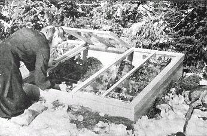
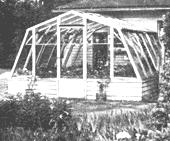
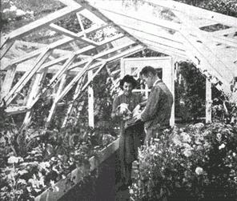

WINTER GARDEN - Cold Frame, Hot Bed, A small greenhouse may be attached to the house and heated by the house furnace.
(Above) Hot bed made with new-type, small-size, puttyless sash. A hotbed is simply a cold frame heated by a bottom layer of manure or an electric heating unit.
(Below) Interior of a small greenhouse that can be bought for $300. This new Lord & Burnham greenhouses has automatic temperature control and automatic watering.
WHEN we first produced our own vegetables, we looked into starting plants under glass. Because this seemed complicated and because we had only about an hour or so of spare time a day to devote to our food-raising activities, we decided we'd buy our plants from a good local greenhouse.
The main reason for growing plants under glass in all of the U.S. (except for the extreme Northern States with their exceptionally short growing season) is to spread the products of your garden over as long a period as possible. Once you have a freezer, glass gardening isn't nearly as vital.
Probably you've read about the new small greenhouses with automatic watering and temperature control that sell in the neighborhood of $300. We talked to the manufacturer, the Lord & Burnham people at Irvington-on-Hudson, N. Y., to find out if these were economical and practical. Here's their answer:
"Frankly, from a straight economic point of view we cannot justify a greenhouse in a "Have-More" project - we would not attempt to, any more than you can justify the purchase of any luxury on straight economic grounds.
"For an ardent amateur gardener, a greenhouse has a different appeal. It permits him to keep his hands in the soil all winter; it permits him to have the satisfaction and pleasure of growing plants and flowers. The best satisfaction comes to those specializing in bringing in unusually fine quality of some particular specie or variety. Then the greenhouse owner can raise plants for setting out in the spring and do it easier and more satisfactorily than in a hotbed or cold frame."
I do think it was pretty fine of these people who sell greenhouses to give us such an honest estimate. They just don't believe a small greenhouse will "pay for itself" on the average homestead. It seems that the value of a greenhouse depends largely on how far north you live. If you live where the grocery stores carry most summer vegetables all winter it probably won't pay you to grow vegetables in a greenhouse.
Commercial growers north of New Haven and especially up past Springfield, Massachusetts into Vermont and New Hampshire can make a greenhouse pay on just one tomato crop. Further north, in Ontario, Canada, it is easier for a commercial grower to make a sure success with winter vegetables.
If you think you'd like to have a greenhouse you might consider attaching it to your house. This lowers the heating cost considerably. I know that Fred Rockwell, editor of Home Garden, has a greenhouse hitched to the southeast corner of his house. The greenhouse is heated by the same furnace that heats the house. This is an economical arrangement because on sunny winter days the greenhouse absorbs a lot of heat and contributes this extra heat to the house. Fred says this system works so well his fuel bills are no higher than before he had his greenhouse.
|
 |
 |
 |